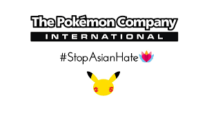

¿Cual es nuestro negocio?
The Pokémon Company International, filial de The Pokémon Company de Japón, tiene a su cargo la propiedad de la empresa fuera de Asia y es responsable de la gestión de la marca, las licencias y el marketing, el Juego de Cartas Coleccionables Pokémon, la serie de dibujos animados para TV, el entretenimiento para el hogar y el sitio web oficial de Pokémon. El fenómeno Pokémon comenzó en Japón en 1996 y dio lugar a lo que es hoy una de las propiedades de entretenimiento más populares entre niños de todo el mundo.
